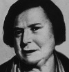

Kate “Ma” Barker (1872–1935) (Kate Barker Ana) Orta Batı’da banka soyguncularından oluşan bir ailenin kadın reisiydi. Büyük Buhran sırasında Barker ve oğullarının adı Oklahoma’dan Chicago’ya uzanan düzinelerce banka soygunu ve cinayete karışmıştır. Barker halk düşmanı ilan edilmiş, ülke çapında bir insan avının hedefi olmuştur. En sonunda çetesiyle birlikte Florida’da sıkıştırılmış ve FBI tarafından vurulmuştur.
Missouri’de doğan Kate Clark, 1890’lı yıllarda George Barker adında bir adamla evlendi. Dört oğulları oldu: Herman, Lloyd, Arthur (1899–1939) ve Fred (1902–1935). Her biri büyüdüklerinde azılı suçlular olacaktı. George Barker ailesini terk edince Kate çocuklarını tek başına yetiştirmek zorunda kaldı.

1910 ve 1920’ler boyunca Barker’ın oğulları banka soygunculuğu ve araba hırsızlığı gibi çeşitli suçlardan içeri girip çıktılar. Herman 1927 yılında intihar etti. Fred ise hapiste Alvin “Creepy” Karpis (1907–1979) (Korkunç Alvin Karpis) isimli bir sabıkalıyla tanıştı. 1931 yılında birlikte Barker-Karpis çetesini kurmaya karar verdiler. Grup sonraki dört yıl boyunca suç tarihine adlarını altın harflerle kazıyacak işler yaptı.
Barker Ana’nın çetedeki rolü tartışmalıydı. Basında zaman zaman çetenin lideri olarak yansıtılıyordu. FBI müdürü J. Edgar Hoover (1895–1972) onu halk düşmanı ilan etmişti. Barker, kanunsuzluğun arttığı Büyük Buhran döneminde yıldızları parlayan John Dillinger (1903–1934) ve Willie Sutton (1901–1980) gibi suç ikonlarının arasında yerini almıştı.
Çete, birkaç polis öldürme olayı ve Minnesotalı milyoner William Hamm’ı fidye için kaçırmakla dikkatleri iyice üstüne çekti. Fred ve annesinin izleri en sonunda Florida’daki kiralık bir eve kadar sürüldü. FBI tarafından eve yapılan baskın sırasında öldürüldüler. Kate Barker bu sırada altmış iki yaşındaydı. Kimileri FBI’ın onun çetedeki rolünü abarttığını söyler. Böylece müdür Hoover büyük bir gangsteri yakaladığı izlenimini vererek kendini kanıtlamıştır.
Ek Bilgiler
1- Barker’ın diğer oğlu Arthur, Alcatraz Adası’ndaki federal hapishaneden kaçmaya çalışırken öldürüldü. Barkerların suç ortağı Alvin Karpis tam yirmi altı yıl boyunca Rock Hapishanesi’nde kaldı. 1969 yılında serbest bırakıldığında bu cezaevinde en uzun süre kalan mahkum unvanına da kavuşmuş oldu.
2- Ma Barker, Walt Disney karakteri “Ma Beagle” için ilham kaynağı olmuştur. “Ma Beagle” Cimri McDuck’ın (Scrooge McDuck - Varyemez Amca) servetine göz diken “Beagle Boys” çetesinin lideriydi.
3- “Ma Barker’s Killer Brood” (Ma Barker’ın Katil Ailesi) isimli film 1960 yılında vizyona girdi. Filmin başrolünde aynı yıl gösterime giren“Sapık”taki küçük rolü ile tanınan Lurene Tuttle (1907–1986) oynuyordu. Oscar ödüllü aktrist Shelley Winters (1920–2006) da “Bloody Mama” (Kanlı Anne) (1970) filminde Barker’ı canlandırdı.